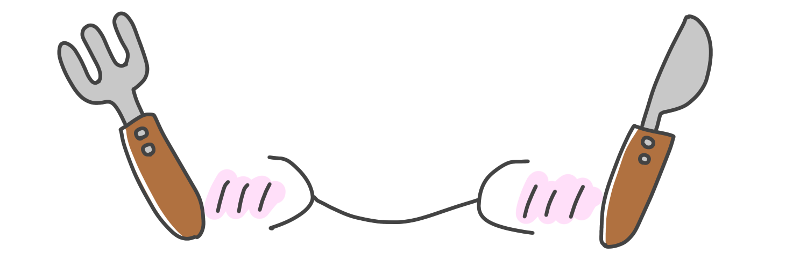
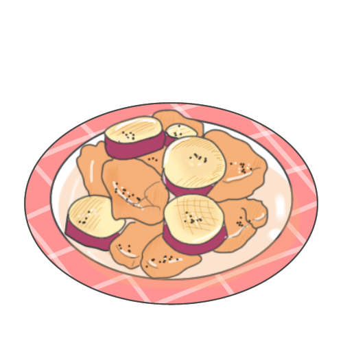
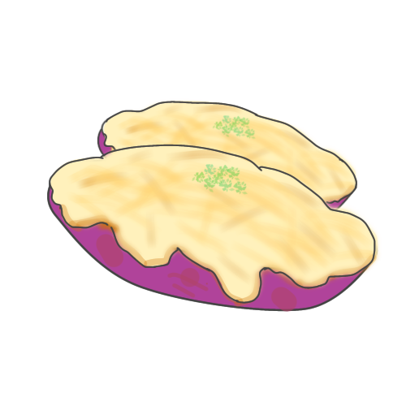
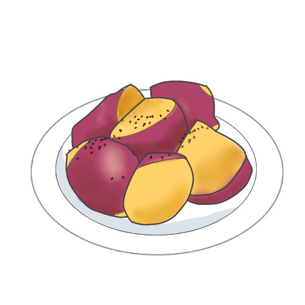
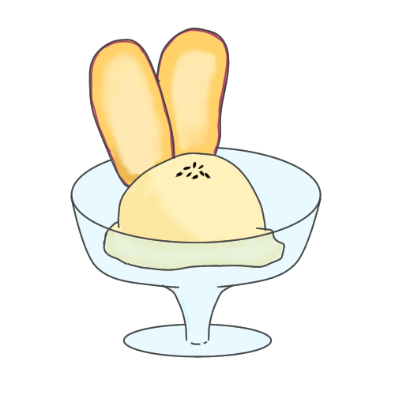
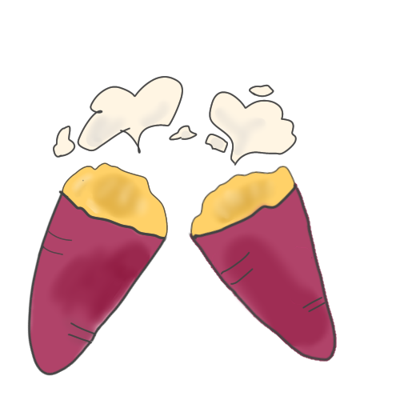

Recipe
さつまいもをふんだんに
使用したレシピを紹介
さつまいもは主食として、おかずとして、さらにはデザートのスイーツやお菓子にも食べたいものの気分に合わせて様々な食べ物に大変身できる食材です。煮ても、焼いても、蒸しても、茹でても、揚げてももおいしい。そんな、さつまいもが”主役”のおかずからスイーツ、オーブンで簡単にできる焼き芋のレシピをご紹介

全料理共通！
さつまいもの下処理方法
このさつまいもの下処理方法を覚えれば、さつまいもの扱い方が上手になります。これから紹介するレシピの１番初めに行ってほしい作業です。
- さつまいもについている泥や砂を流水できれいに洗い流す。
- 用途に合わせて切る。皮を蒸す場合はピーラーがおすすめ！
- 水を張ったボウルに５分程度さらしてアク抜きを行う。
- 水気を切れば、準備完了！
この簡単な４ステップを行うことでさつまいものおいしさを最大限に引き立たせることができます。
さつまいものおかず編
ほっくりさつまいもの照り焼き
ー材料ー （２～３人分）
- さつまいも
- 200g～250ｇ(中サイズ１本)
- 鶏もも肉
- １枚
- 料理酒
- 大さじ２
- 🅰みりん
- 大さじ１
- 🅰しょうゆ
- 大さじ１
- 🅰砂糖
- 小さじ２
- 鶏がらだしの素
- 小さじ１
- サラダ油
- 大さじ１
- 黒ゴマ
- 適量
ー調理手順ー
- 鶏もも肉を１口大に切って、１０分程度料理酒に着けておく。
- 下処理したさつまいもを耐熱容器に入れレンジ５００Wで３分加熱。
- フライパンでサラダ油を熱し、鶏肉を中火で色がほんのり変わるまで焼く。
- さつまいもを加え鶏肉とさつまいもに焼き目をつける。
- 材料の🅰をすべて加え、煮からめる。
- 材料🅰の水分がある程度飛んだら火を止めて、お皿に盛りつけて、黒ゴマを散らしたら完成！
さつまいものとろ～りポタージュ
ー材料ー （２～３人分）
- さつまいも
- 200g～250ｇ(中サイズ１本)
- 玉ねぎ
- １/４個（５０ｇ）
- バター
- １０ｇ
- 水
- ２００ｍｌ
- 牛乳（豆乳）
- ２００ｍｌ
- 固形ブイヨン
- １個
- 塩
- 適量
- パセリ
- 適量
ー調理手順ー
- 下処理後のさつまいも、玉ねぎ、バター、水を鍋に入れて火にかける。このとき、沸騰までは強火、その後蓋をし、弱火にして２０分程度。
- フォークでつぶせる程度になったら別の容器に移してブレンダーやミキサーにかける。
- 鍋に戻し、牛乳（豆乳）と刻んだ固形ブイヨンを加え、ブイヨンが解けるまで弱火で伸ばす。
- 沸騰する直前で火をとめ、味をみて物足りないときは塩を加え、スーツカップに注ぐ。パセリを散らせば、完成！
丸ごとさつまいもグラタン
ー材料ー （２人分）
- さつまいも
- 200g～250ｇ(まるまるした形のもの)
- 玉ねぎ
- １/２個
- ベーコン
- 薄切り２枚
- ニンニク
- １/２個（チューブ３㎝）
- バター
- １５ｇ
- しめじ
- ２/１パック
- 薄力粉
- 大さじ１
- 牛乳（豆乳）
- １００ｍｌ
- コンソメ
- 小さじ１/２
- 塩こしょう
- 少々
- チーズ
- 好きなだけ
- パセリ
- 適量
ー調理手順ー
- 半分に切った下処理後のさつまいもをラップでぴったりとくるみ、耐熱皿においてレンジ５００Ｗで５分。
- やけどに注意しながらさつまいもの中身をきれいにくりぬき、軽くつぶす。この皮はとっておく。
- 玉ねぎとニンニクは薄くスライスし、ベーコンは１㎝幅に切っておく。
- フライパンにバター、ニンニクを加えてにんにくの香りが出てきたら玉ねぎとしめじ、ベーコンを加え、炒める。
- 玉ねぎがしんなりしたところに薄力粉を加え、粉っぽさがなくなったら、牛乳（豆乳）を少しずついれて、とろみをつける
- さつまいもを加え、コンソメ、塩コショウで味を調える。
- とっておいた皮に盛り付け、チーズを好きなだけかけたら、余熱なし２００℃で１５分または、トースターで８～１０分焼き目がつくまで焼く。お皿に盛り付け、パセリを散らしたら完成！
さつまいもの
お菓子・スイーツ編
万能さつまいもの甘露煮
ー材料ー
- さつまいも
- 200g～250ｇ(中サイズ１本)
- 砂糖
- 大さじ１
- みりん
- 大さじ２
- 醤油
- 小さじ１
- 水
- ２００ｍｌ
ー調理手順ー
- 好みの大きさに切った下処理後のさつまいもとすべての材料を鍋に入れて、蓋をし、中火にかける。
- すべての汁気がなくなったら完成！
スイートポテト
ー材料ー
- さつまいも
- 200g～250ｇ(中サイズ１本)
- バター
- １５ｇ
- 砂糖
- ２０ｇ
- 牛乳（豆乳）
- ２０～３０ｍｌ
- 卵黄
- １個分
- 黒ゴマ
- 適量
ー調理手順ー
- 皮をむいて下処理をしたさつまいもを耐熱皿にいれてふんわりとラップをかけ、レンジ５００Ｗで８～１０分。竹串がスーッと通るぐらい。
- マッシャーでつぶす。（さらに、裏ごしをするとなめらかになる。）
- さつまいもが熱いうちにバター砂糖を加える。（さつまいもが覚めてしまった場合は小さじ１の水を加え、レンジ５００Ｗで１分加熱。）
- 牛乳（豆乳）を少しずつ加え、形が保てるぐらいの滑らかさになっればＯＫ。
- アルミカップやクッキングシートに整形し、卵黄を塗り、黒ゴマを散らす。
- 余熱あり２００℃のオーブンで１０～１５分または、トースターで５～１０分、焼き目が付く案で焼いたら完成！
濃厚さつまいもアイスクリーム
ー材料ー
- さつまいも
- 200g～250ｇ
- 卵黄
- １個分
- 砂糖
- 小さじ１
- 牛乳
- １００ｍｌ
- 生クリーム
- ５０ｍｌ
- はちみつ
- ３０ｇ
ー調理手順ー
焼き芋編
オーブンでねっとり焼き芋
ー材料ー
- さつまいも
- 小さめを入るだけ！
ー調理手順ー
- 下処理のStep１だけを行い、オーブンの用の天板の上にクッキングシートを敷き並べる。
- 余熱なしのオーブン１７０℃で３０分～４０分加熱する。
- 一度取り出し、フォークや竹串で数か所刺す。
- ミキサーにすべての材料をいれ、なめらかにする。
- 今度は余熱なし１６０℃のオーブンで９０分加熱する。
- 加熱し終えたら、完成！ここでさらにおいしく食べたい人は次のステップへ！！
- 加熱し終えても、オーブンから取り出さず、自然とオーブン内の温度が冷めるのをひたすら待つ。
- ３０～１時間たったら熟成された焼き芋の完成！